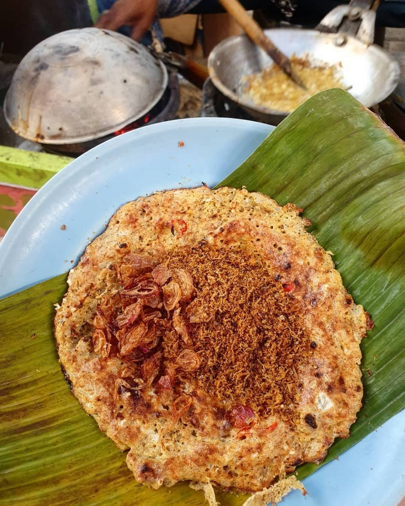
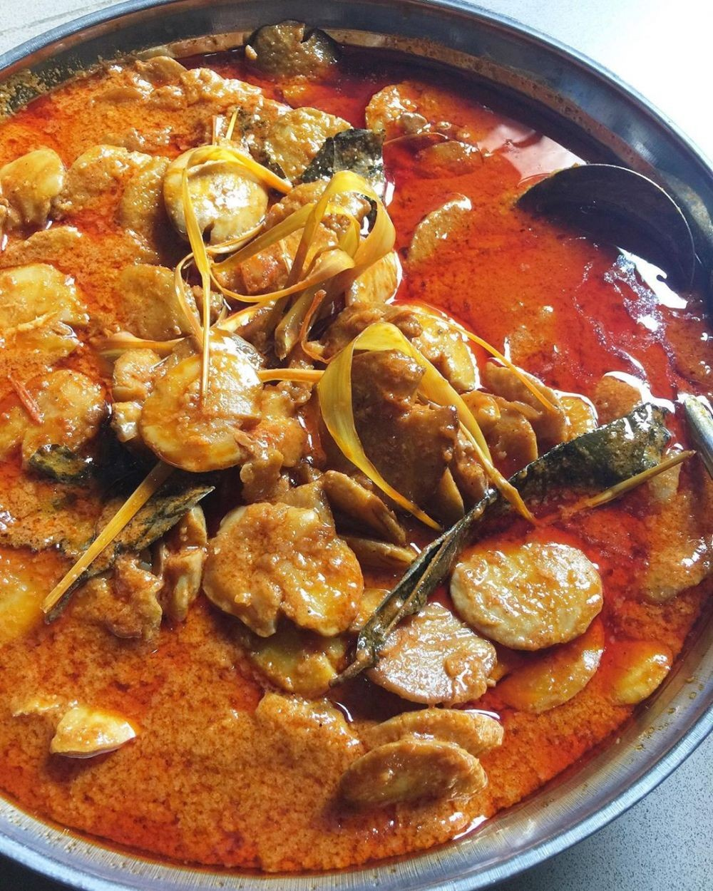
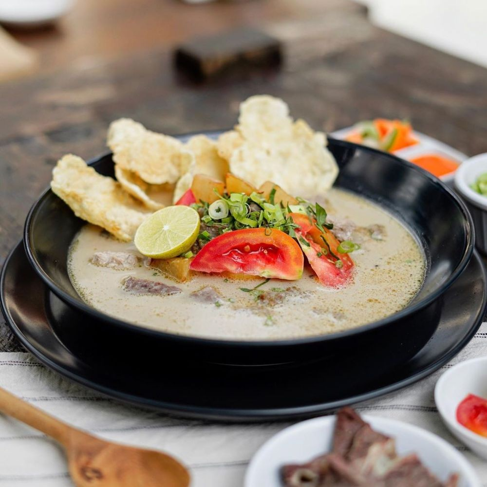
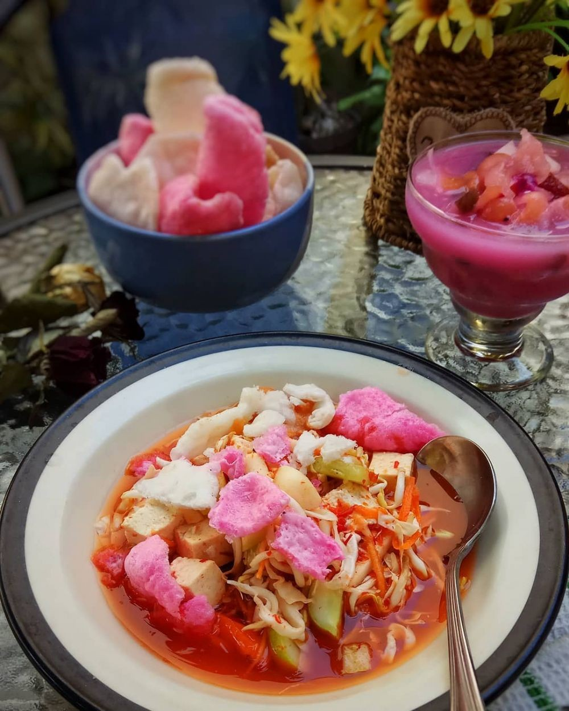
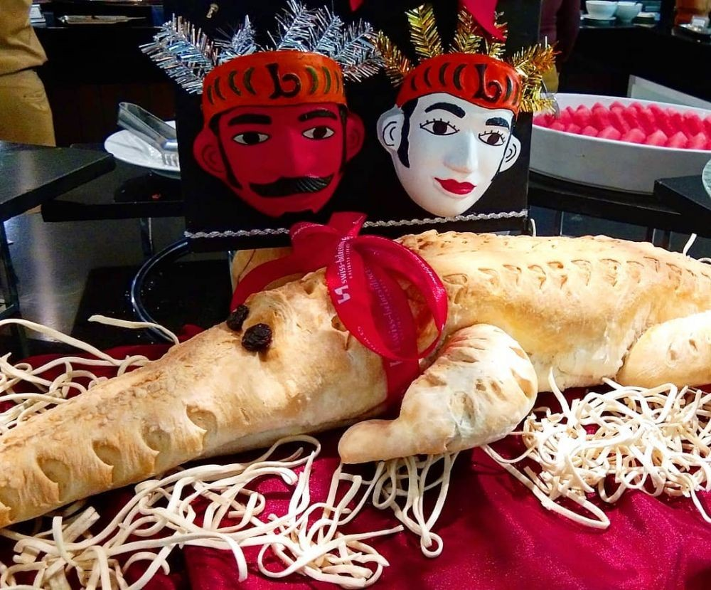

Dari sekian banyak jenis makanan ibu kota, sepuluh di antaranya jadi yang paling favorit.
Nah kali ini Admin rangkum beberapa makanan khas Betawi yang paling jadi favorit dan terkenal di kalangan semua umur.
Intip yuk kira-kira ada apa aja!

1. Kerak Telor
Telur dihadapkan pada panas arang hingga jadi mirip kerak dan tampak agak gosong,
lalu diberi bawang goreng dan serundeng.

2. Semur Jengkol
Meski baunya kadang gak disukai, olahan jengkol tetap jadi favorit banyak orang.
Salah satunya semur jengkol.

3. Soto Betawi
Makanan khas Betawi yang satu ini pastinya kamu tahu deh, selain banyak yang jual di pinggir jalan juga kamu bisa
bikin sendiri dirumah. Salah satu ciri khas soto Betawi yakni adanya jeroan, bahkan mata dan torpedo sapi, serta emping.

4. Asinan Betawi
Siapa yang tidak tahu dengan makanan ciri khas yang satu ini. Asinan Betawi terdiri dari kol, sawi, selada, dan taoge
yang diasinkan. Kemudian, disajikan dengan campuran bumbu kacang, cuka, dan cabai

5. Roti Buaya
Roti buaya biasanya muncul di acara pernikahan tradisional orang Betawi.
Buaya hanya kawin sekali, maka dari itu dipercaya bisa jadi lambang kesetiaan.